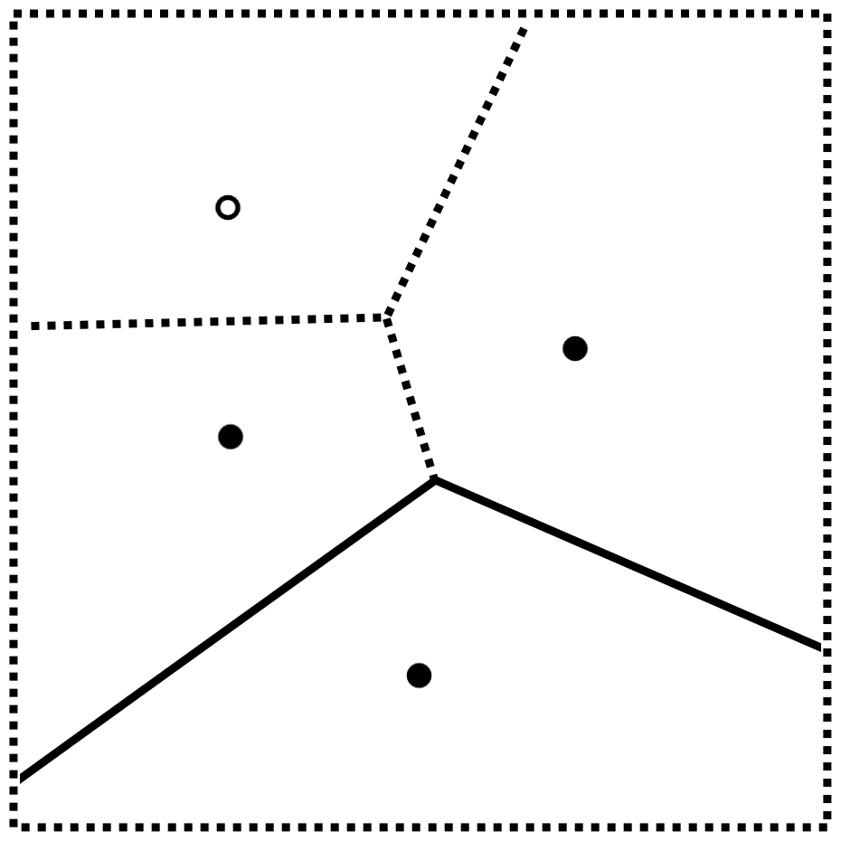
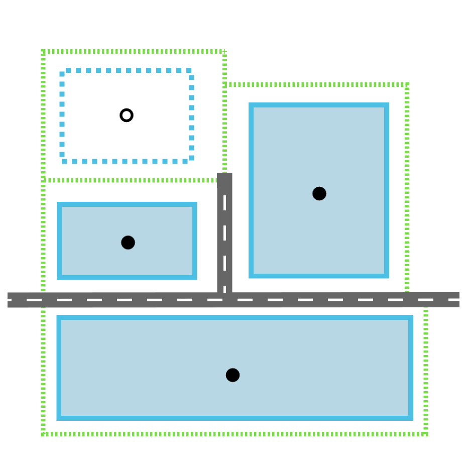

Morphogenèse urbaine
coévolution du réseau viaire et du bâti
Merwan Achibet
Université du Havre
28 juin 2012

Plan
-
Introduction
- Context
- Cellular automata and their limitations
- An example of multi-agent system
-
Le modèle
- Structure
- Potentialité
- Trois mécanismes
-
Démonstration
Introduction
Context
- Since the 50's, huge urbanization
- 50% in 2007, ~80% in 2050
- → needs prevision and control

(Picture by Kris Horvath, Creative Commons)
Our focus : coevolution of land lots and road network.
Cellular automata
A basic space tesselation.
Each cell:
- has a state
- has a neighborhood
- updates synchronously
|
|
Geographic example: Schelling's segregation model
Cellular automata as part of urban simulations
A cell represents a spatial subdivision.
A cell has a state.
- Boolean (empty/built)
- Land use type (residential, commercial, industrial, ...)
- Any urban variable
A cell has a neighborhood.
- Moore or Von Neumann
- Radius
- Generally depends on the application
Example
- Basic functions : EV(S,R), RV(S,R), ZV(S,R)
- Compound rules : Fr > Zp = ZV(Ind,3) • EV(Ctr+Com,2)

Edwige Dubos-Paillard, Yves Guermond et Patrice
Langlois. "Analyse de l'évolution urbaine par automate
cellulaire : le modèle SpaCelle". Dans L'Espace
Géographique 32 (2003).
First shortcomings of cellular automata
The rigidity of their formalism goes against realism.
- State discretization
- Temporal synchronism
- Regularity and homogeneity
Relaxation of the regularity
Generalization : graph-based cellular automata.

David O'Sullivan. "Graph-based Cellular Automaton Models of
Urban Spatial Processes". Thèse de doct. Bartlett School of
Architecture and Planning, University College London, 2000.
Another shortcoming: where is the road network?
(Picture by flickr.com/people/ryanready, Creative Commons)
- Sometimes ignored
- Sometimes given as an input but remains static
- Even if it has a central role!
Is the cell representation adapted?
Another example: a multi-agent model
- promoter agents: buy, sell, change the type
- tracer agents: connect isolated land lots to the road network.
Tom Lechner, Seth Tisue et Andy Moddrell, Procedural
Modeling of Urban Land Use. Department of Computer
Science, North Carolina State Université, 2007.
A lack of historical consistency
- Valid initial configuration
- Valid final configuration
- Intermediary steps are faulty
Le modèle
Objectif du modèle
On propose un modèle de croissance urbaine :
- Reprenant le principe des automates cellulaires
- Gérant l'évolution conjointe du bâti et du viaire
- Reflétant l'irrégularité de la ville
- Garantissant la cohérence temporelle
Une structure adaptée : le diagramme de Voronoï

La cellule de Voronoï V(g) contient l'ensemble des
points plus proches du générateur g que de tout
autre générateur.
Représentation du bâti
- Générateur → centre de la parcelle
- Cellule → espace d'influence de la parcelle

Représentation du viaire
- Arête de Voronoï → route
- Sommet de Voronoï → carrefour
L'ensemble des arêtes forme un réseau maximal.
Véritable réseau routier = sous-partie du réseau maximal.
Potentialité
Deux éléments urbains traités :
Peuvent prendre deux formes :
- Les construits : définitivement placés, forment la ville
- Les potentiels : intangibles, prévisionnels
Exemple illustratif





La cellule de Voronoï n'est pas la parcelle exacte !

Mécanisme 1 : automate cellulaire